한빛 딜리버리가 지금 쓰는 옛 주문 시스템(Java · DDL)을 분석해 코드 그래프와 데이터 스키마를 만들고, 그 그래프를 근거로 새 기능 「주문 거절 사유」를 프로포절로 설계합니다. 분석도 설계도 내 컴퓨터의 Claude Code가 하므로 OpenAI 키 없이 됩니다.
옛 시스템에서 시작하는 설계#
지금까지는 빈 프로젝트에 요구사항을 넣어 설계했습니다. 실제 일은 대개 이미 돌아가는 시스템을 고치거나 새로 짜는 일입니다. 그때 가장 비싼 실수는 옛 시스템이 이미 지키고 있는 업무 규칙을 모르고 새 설계를 하는 것입니다 — 「접수 대기 주문만 거절할 수 있다」, 「영업을 마치면 대기 주문을 한꺼번에 거절한다」 같은 규칙은 문서에 없고 코드에만 있습니다.
이 장은 두 부분입니다.
| 부분 | 하는 일 | 결과 |
|---|---|---|
| 1. 분석 | 레거시 › 코드에서 옛 코드 폴더를 분석 | 코드 그래프(클래스 · 메서드 · 업무 규칙 · 예시) · 데이터 스키마(테이블 · 컬럼 설명) |
| 2. 근거로 설계 | 새 요구사항을 프로포절로 넣으면 INTENT 스킬이 분석 그래프를 찾아 요소마다 근거를 붙인다 | 「근거 연결 n/m」, 요소별 근거 태그 · 원문 코드 |
실습 코드#
hanbit-legacy.zip을 내려받아 풉니다. 2016년부터 쓰는 한빛 딜리버리의 옛 주문 시스템입니다 — Java 8 + JDBC, DB는 11장에서 연결한 PostgreSQL 스키마 delivery 입니다.
| 파일 | 하는 일 |
|---|---|
schema/delivery.sql |
테이블 7개(customer · store · menu · orders · order_item · rider · delivery) |
order/OrderService.java |
주문하기 · 접수 · 거절 · 조리 시작 · 취소 — 상태 바꾸기는 모두 changeStatus 하나로 |
store/StoreService.java |
영업 시작 · 영업 종료(대기 주문 일괄 거절) |
menu/MenuService.java · delivery/DeliveryService.java · report/SettlementReport.java |
메뉴 · 배달 · 일 정산 |
주문 상태는 WAITING → ACCEPTED → COOKING → DELIVERING → DELIVERED 로 가고, 중간에 CANCELLED · REJECTED 로 끝날 수 있습니다. 거절할 때 사유는 어디에도 남지 않습니다 — 2부에서 고칠 곳입니다.
따라 하기 1 — 프로젝트 만들기#
- 홈의 프로젝트 줄에서 프로젝트 바꾸기를 누르고, 새 프로젝트 칸에
hanbit_legacy를 쓰고 만들기를 누릅니다. - 코드 폴더는 폴더 선택...으로 압축을 푼
hanbit-legacy폴더를 고르고 프로젝트 열기를 누릅니다.
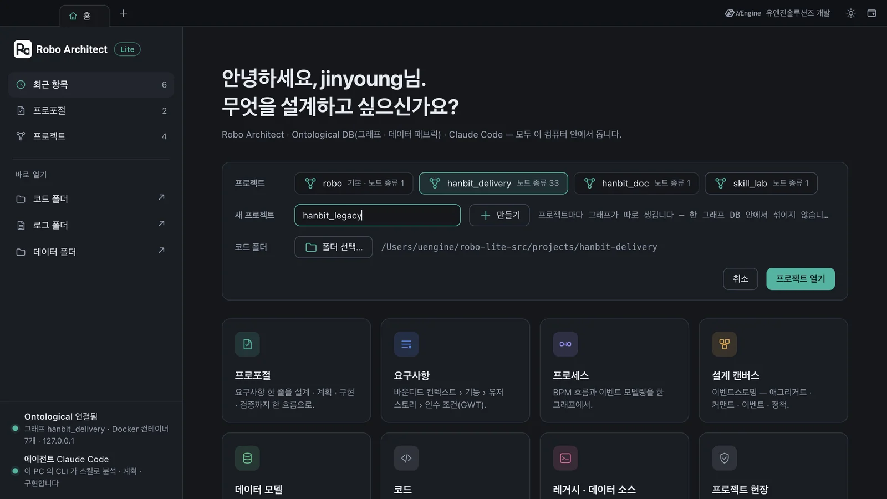
따라 하기 2 — 분석 시작#
- 홈에서 레거시 · 데이터 소스 카드를 엽니다. 레일의 코드에 코드 폴더의 파일 트리가 보입니다(파일을 누르면 오른쪽에 미리보기).
- 아래의 분석 시작을 누릅니다. 전에 분석한 결과가 있으면 지우고 다시 할지 묻습니다 — 계속합니다.
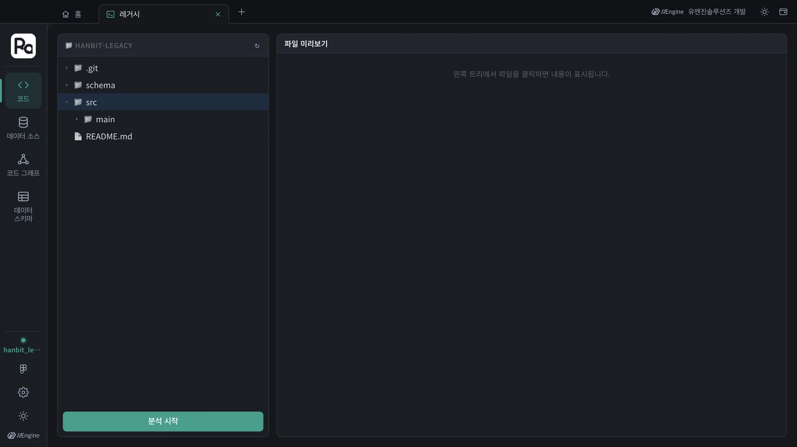
분석은 일곱 단계로 갑니다 — DDL 파싱 · 소스 적재 · 프로젝트 스캔 · 관계 연결 · 분석 컨텍스트 구성 · 코드 분석 · 후처리. 앞의 넷은 코드를 구문 분석해 클래스 · 메서드 · 테이블과 그 사이의 호출 · 읽기 · 쓰기를 잇고, 코드 분석에서 AI가 메서드마다 하는 일 · 업무 규칙 · 예시를 씁니다. 화면은 곧 코드 그래프로 옮겨 가고, 진행 창이 단계와 노드 · 관계 수를 보여 줍니다. 이 튜토리얼에서는 141초(약 2분 반) 걸렸습니다.
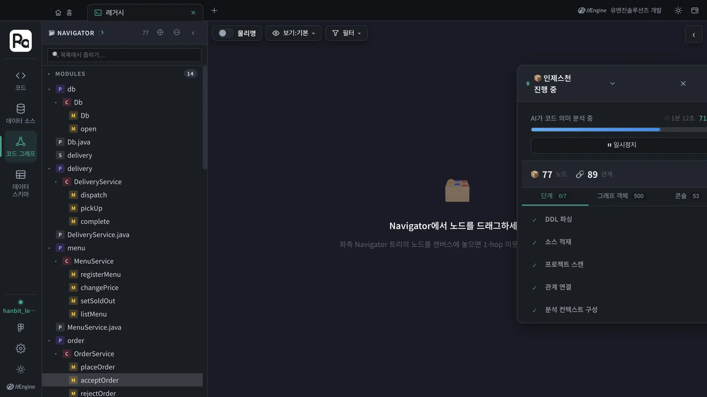
AI는 내 컴퓨터의 Claude Code
분석기의 AI 호출은 앱을 거쳐 내 컴퓨터의 Claude Code(claude -p)가 답합니다. 프로포절 스킬과 같은 로그인 세션을 쓰므로 OpenAI 키가 필요 없습니다. 이때 분석기의 「의미 검색」은 벡터(임베딩) 대신 낱말 검색으로 후보를 찾습니다 — 2부의 근거 찾기가 이 검색을 씁니다.
따라 하기 3 — 코드 그래프 읽기#
분석이 끝나면 왼쪽 NAVIGATOR가 패키지 › 클래스 › 메서드 트리가 됩니다. 이 튜토리얼에서는 클래스 6개, 메서드 18개, 테이블 7개(컬럼 32개)였고, 메서드가 테이블을 읽고 쓰는 곳 23군데와 호출 46개가 이어졌습니다.
- 트리에서 order › OrderService를 펼칩니다. 메서드 이름을 더블클릭하면 캔버스에 올라갑니다 —
placeOrder·acceptOrder·rejectOrder·startCooking·cancelOrder·changeStatus를 올려 봅니다. 접수 · 거절 · 조리 · 취소가 모두changeStatus를 호출하는 것이 선으로 보입니다. - 트리에서
rejectOrder를 한 번 누르면 오른쪽에 상세가 열립니다 — 논리명 「접수 대기 주문 거절」, 역할 명령(Command), 개요, 업무 규칙, 원문 코드, 연결.
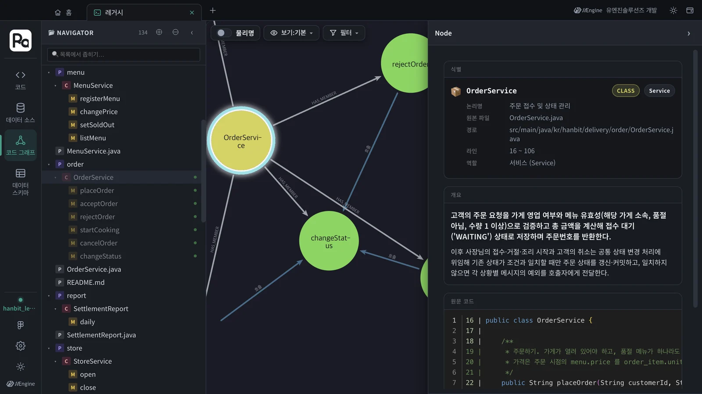
업무 규칙이 이 장의 핵심 재료입니다. 코드가 실제로 지키는 규칙이 문장 하나와 예시(상황 · 요청 · 결과)로 적혀 있습니다.
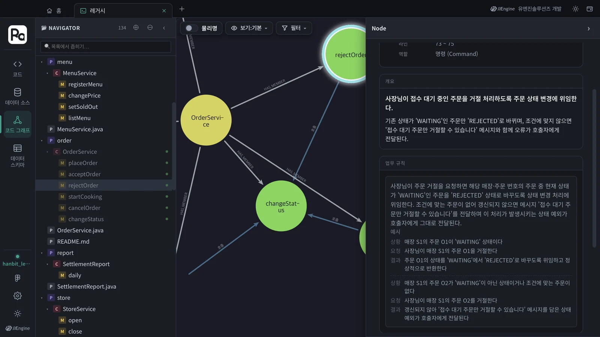
StoreService.close 를 열어 보면 「가게 영업 종료 갱신과 대기 주문 거절 갱신을 하나의 트랜잭션으로 커밋한다」, 「'WAITING' 주문만 'REJECTED' 로」 같은 규칙이 있습니다. 어느 문서에도 없던 사실이 코드에서 나온 것입니다.
따라 하기 4 — 데이터 스키마#
레일의 데이터 스키마를 누르면 왼쪽에 DDL에서 읽은 테이블 7개(default › delivery)가 있습니다. 테이블 이름을 더블클릭해 캔버스에 올립니다. 논리명을 켜 두면 테이블은 「주문」 · 「가게」 · 「주문 항목」 · 「가게 메뉴」 처럼, 컬럼은 코드 분석이 쓴 설명으로 보입니다.
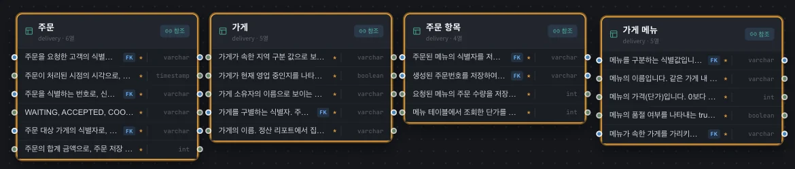
11장에서 등록만 했을 때 비어 있던 데이터 스키마가, DDL과 코드 분석으로 채워졌습니다. 컬럼 설명은 「주문 상태 변경과 취소 때 대상 주문을 고르는 조건으로 쓰인다」처럼 코드가 그 컬럼을 어떻게 쓰는지에서 나옵니다.
분석 결과는 앱에 하나입니다
분석 그래프는 프로젝트마다가 아니라 앱 전체에 하나입니다. 다른 코드 폴더를 분석하면 이전 분석을 지우고 다시 씁니다. 그리고 AI가 쓴 부분(규칙 수 · 문장)은 돌릴 때마다 조금씩 다릅니다 — 이 튜토리얼에서 업무 규칙은 35개 · 53개로 달랐습니다. 구문 분석으로 나오는 클래스 · 메서드 · 테이블은 같습니다.
따라 하기 5 — 레거시를 근거로 새 기능 설계#
이제 분석 그래프를 설계의 근거로 씁니다. 새 기능은 「주문 거절 사유」입니다 — 옛 시스템은 거절만 하고 사유를 남기지 않습니다.
- 같은
hanbit_legacy프로젝트에서 프로포절 카드를 열고 + 새 Proposal을 누릅니다. - 다음 요구사항을 쓰고 AI 분석 시작을 누릅니다.
한빛 딜리버리: 사장님은 들어온 주문을 거절할 때 사유(재료 소진, 영업 종료, 기타)를 하나 고른다. 고객은 거절된 주문의 상태와 함께 그 사유를 본다. 영업 종료로 접수 대기 주문이 한꺼번에 거절될 때도 사유가 남아야 한다.
진행 창을 보면 3장 · 12장과 다른 점이 있습니다. INTENT 스킬이 업무 축마다 레거시 그래프 검색을 하고(「레거시 후보 10개 · 규칙 2개 검색됨」), 쓸 만한 후보는 레거시 노드 상세 조회로 원문까지 엽니다 — changeStatus · StoreService.close · orders 테이블 같은 것들입니다. 이 튜토리얼에서는 186초(약 3분) 걸렸습니다.
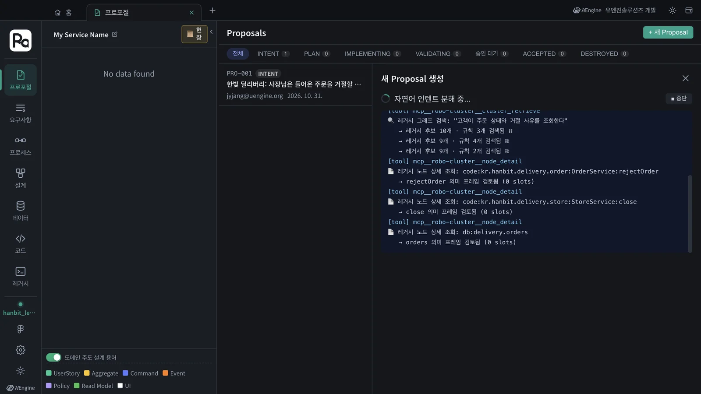
Proposal 보기를 누르면 머리에 근거가 요약돼 있습니다 — 레거시 근거 15, 근거 연결 11/11. 요소 11개(바운디드 컨텍스트 2 · 기능 3 · 사용자 스토리 4 · 프로세스 2)가 모두 옛 코드의 어딘가에 근거를 두었다는 뜻입니다. 요소마다 붙은 꼬리표(🔗 2)가 그 요소의 근거 수입니다.
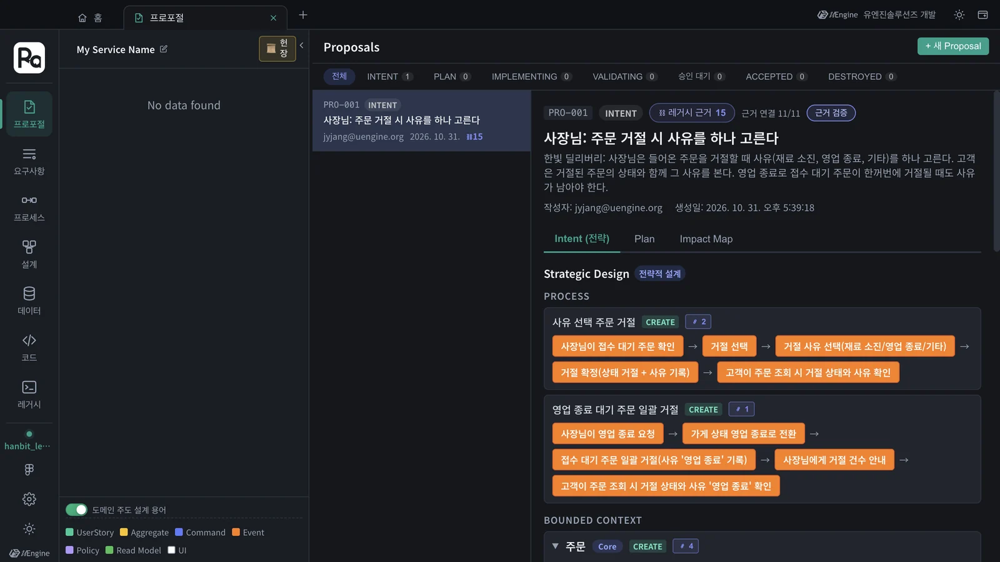
꼬리표를 누르면 그 요소의 근거가 열립니다. 프로세스 「사유 선택 주문 거절」의 근거는 둘입니다.
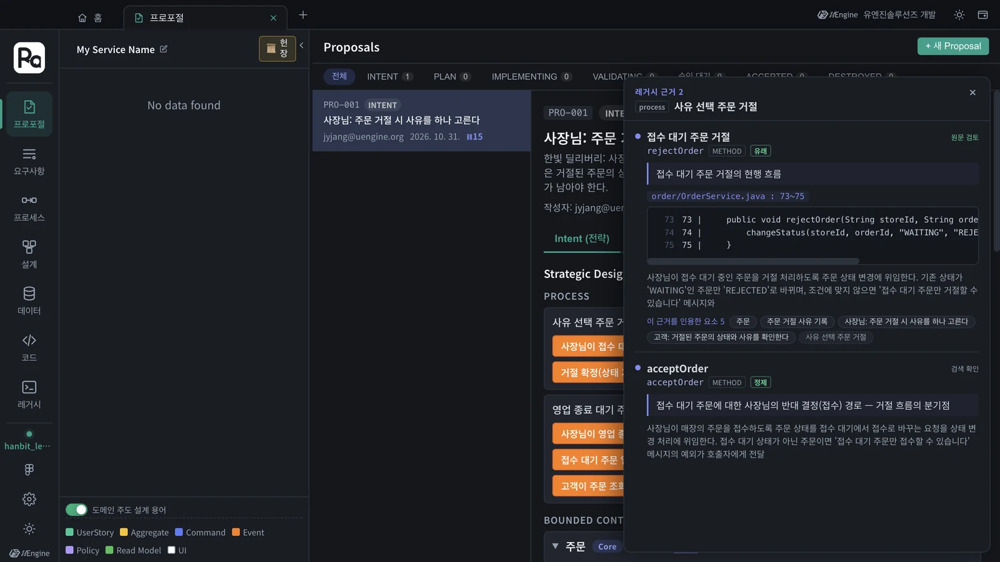
| 표시 | 뜻 |
|---|---|
| 유래 · 정제 · 읽음 · 씀 | 새 요소와 옛 코드의 관계 — 옛 동작에서 나왔다 / 옛 동작을 고친다 / 그 테이블을 읽는다 · 쓴다 |
| 원문 검토 · 검색 확인 | INTENT가 원문 코드까지 열어 확인했다 / 검색 결과로만 확인했다 |
| 파일 : 줄 · 코드 | 근거가 된 원문(order/OrderService.java : 73~75) |
| 이 근거를 인용한 요소 n | 같은 옛 코드에 기대는 새 요소들 — 옛 코드를 바꾸면 함께 영향받는다 |
근거는 인수 조건에도 나타납니다. 「고객: 거절된 주문의 상태와 사유를 확인한다」에는 「사유 기록 기능 도입 이전에 거절된 주문 → 상태 '거절됨'과 함께 '사유 정보 없음'」이 있습니다 — 옛 시스템에 이미 사유 없는 거절 주문이 쌓여 있다는 사실(DDL과 rejectOrder)에서 나온 조건입니다. 「사장님: 가게 영업을 종료한다」의 「거절된 접수 대기 주문 건수가 표시된다(없으면 0건)」는 StoreService.close 가 거절한 건수를 돌려준다는 규칙에서 왔습니다. 요구사항 문장에는 없던 것들입니다.
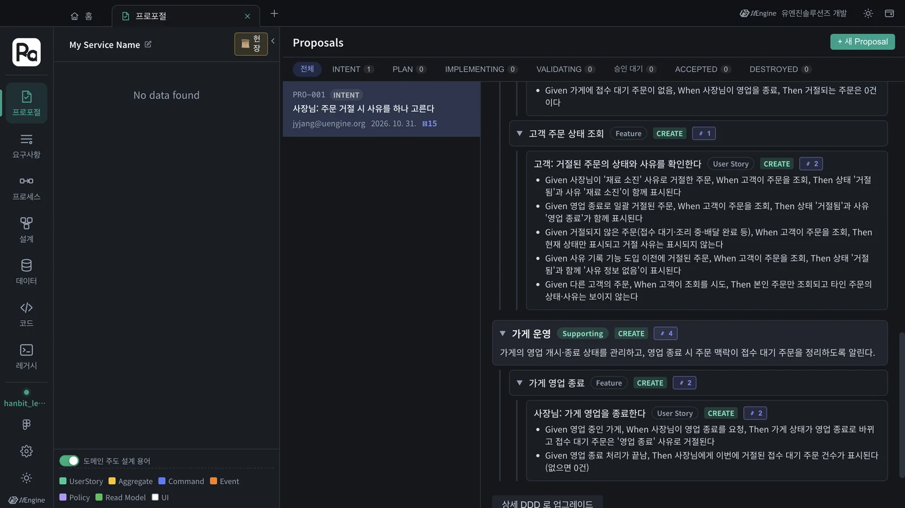
Impact Map 탭의 오른쪽 레거시 근거 칸은 근거를 옛 코드 쪽에서 모아 봅니다(이 튜토리얼에서는 인용 10 · 검색 5). 카드에 마우스를 올리면 그 근거를 인용한 요구사항으로 선이 이어지고, 누르면 원문과 인용한 요소가 열립니다.
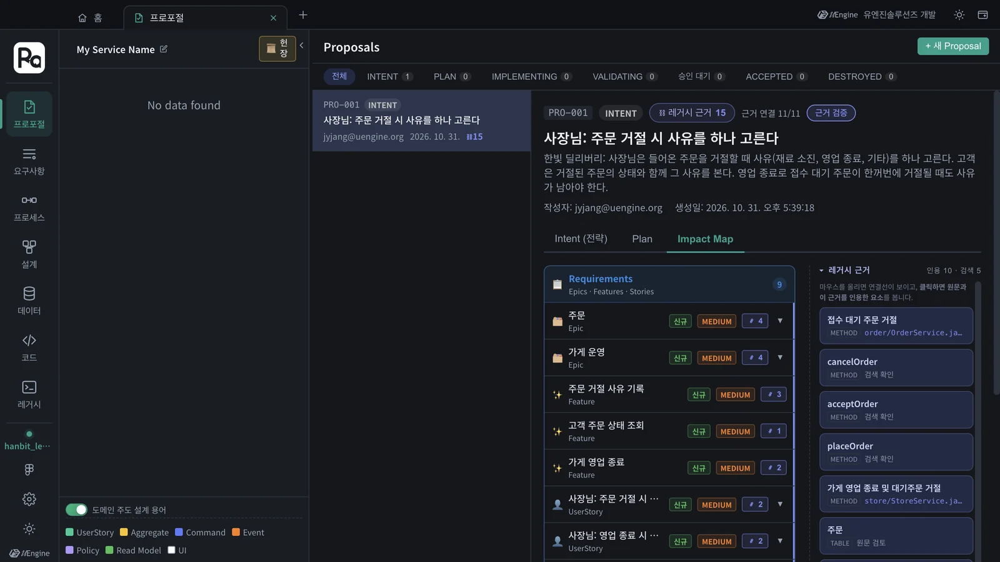
이 프로포절도 3장의 PRO-001처럼 Plan 단계로 진행 →에서 헌장 · Plan · 구현으로 이어 갑니다. Plan과 구현 단계의 스킬도 같은 근거를 다시 씁니다 — 이미 열어 본 원문은 다시 찾지 않습니다.
근거 검증
머리의 근거 검증을 누르면 모든 요소의 근거 판정과 연결선을 한꺼번에 펼쳐 봅니다. 근거가 없는 요소는 「근거 없음」(레거시에 대응이 없는, 새로 도입되는 요소)으로 표시됩니다 — 그것도 정보입니다. 새 요소가 왜 새것인지 따져 볼 자리입니다.
확인할 것#
- 레거시 › 코드 그래프의 트리에 order › OrderService › rejectOrder 가 있고, 상세에 업무 규칙과 예시가 보인다.
- 데이터 스키마에 테이블 7개(delivery)가 있다.
- 「주문 거절 사유」 프로포절의 머리에 「근거 연결 n/m」이 있고, 요소의 꼬리표를 누르면 원문 코드(파일 : 줄)가 보인다.
확인 문제#
- 업무 규칙과 예시는 어디서 나오나요? 문서인가요, 코드인가요?
- 「근거 연결 11/11」은 무슨 뜻인가요? 0/11 이 나오면 무엇을 먼저 확인할까요?
- 근거의 「원문 검토」와 「검색 확인」은 무엇이 다른가요?
- 「사유 정보 없음」 인수 조건은 요구사항 문장에 없었습니다. 어디서 왔나요?
정답
- 코드입니다. 분석의 「코드 분석」 단계에서 AI가 메서드마다 하는 일과 규칙을 쓰고, 규칙마다 상황 · 요청 · 결과 예시를 붙입니다. 그래서 문서에 없던 규칙(대기 주문만 거절, 영업 종료 시 일괄 거절)이 나옵니다.
- 새 요소 11개가 모두 옛 코드의 어딘가에 근거를 두었다는 뜻입니다. 0/11 이면 먼저 레거시 › 코드 그래프에 분석 결과가 있는지 봅니다 — 분석은 앱에 하나라서, 다른 폴더를 분석했다면 그 결과가 근거로 쓰입니다.
- 원문 검토는 INTENT가 노드 상세 조회로 원문 코드까지 열어 확인한 근거, 검색 확인은 검색 결과(요약)로만 확인한 근거입니다.
- 옛 시스템이 거절 사유를 남기지 않는다는 사실(rejectOrder · DDL)에서 왔습니다. 새 기능을 넣는 날 이미 쌓여 있는 거절 주문을 어떻게 보여 줄지가 설계에 들어간 것입니다.